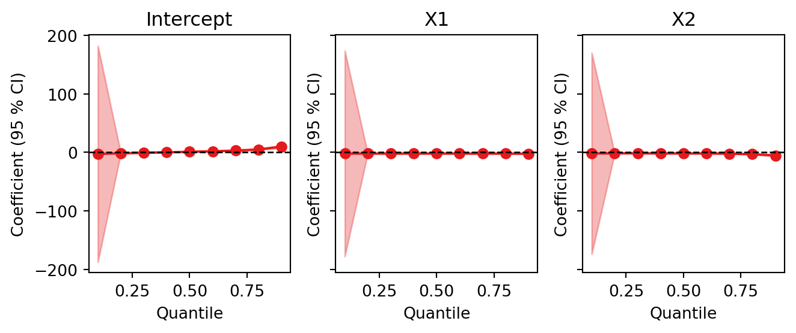

import pyfixest as pf
from pyfixest.report.utils import rename_categoricals
df = pf.get_data()
fit1 = pf.feols("Y ~ X1", data = df)
fit2 = pf.feols("Y ~ X1 + X2", data = df)
fit3 = pf.feols("Y ~ X1 + X2 | f1", data = df)Changelog
PyFixest 0.31.0 (In Dev, Install from Github)
cat_template argument for plotting functions
For easier encoding of categorical variables in relation to the iplot() and coefplot() functions, we add a new function argument, cat_template:
fit_c = pf.feols(fml = "Y ~ i(X1, f1)", data = df)
fit_c.iplot(cat_template = "{variable}::{value}")This is particularly useful for Difference-in-Differences and event studies. You can find an example use case in the DiD vignette.
Going forward, we will deprecate the rename_event_study_coefs function, which is no longer needed (and did not work anyways).
Updates to Gelbach Decomposition
We have reworked the Gelbach Decomposition method, with some breaking changes: by default, calling Feols.decompose() now returns a GelbachDecomposition instance - before, we’d return a pd.DataFrame. The param argument has been renamed to decomp_var, but is not yet deprecated.
The class now comes with new tidy() and etable() methods.
from pyfixest.utils.dgps import gelbach_data
import numpy as np
import pyfixest as pf
# Generate test data using gelbach_data
data = gelbach_data(nobs=500)
data["w"] = np.random.rand(500)
fit = pf.feols("y ~ x1 + x21 + x22 + x23", data=data)
gb = fit.decompose(decomp_var = "x1", x1_vars = ["x21"],reps = 10, nthreads = 1)
print(type(gb)) 0%| | 0/10 [00:00<?, ?it/s]100%|██████████| 10/10 [00:00<00:00, 369.15it/s]<class 'pyfixest.estimation.decomposition.GelbachDecomposition'>It is now also possible to add background variables that are included in both the long and short regressions via the x1_vars function argument.
We can inspect results as a pd.DataFrame
gb.tidy()| coefficients | ci_lower | ci_upper | panels | |
|---|---|---|---|---|
| direct_effect | 1.412165 | 0.789659 | 1.880206 | Levels (units) |
| full_effect | 1.041753 | 0.970076 | 1.122070 | Levels (units) |
| explained_effect | 0.370412 | -0.269082 | 0.799118 | Levels (units) |
| unexplained_effect | 1.041753 | 0.970076 | 1.122070 | Levels (units) |
| x22 | 0.061930 | -0.346605 | 0.315171 | Levels (units) |
| x23 | 0.308483 | 0.077523 | 0.483947 | Levels (units) |
| direct_effect | 1.000000 | 1.000000 | 1.000000 | Share of Full Effect |
| full_effect | 0.737699 | 0.575324 | 1.420803 | Share of Full Effect |
| explained_effect | 0.262301 | -0.420803 | 0.424676 | Share of Full Effect |
| unexplained_effect | 0.737699 | 0.575324 | 1.420803 | Share of Full Effect |
| x22 | 0.043855 | -0.501124 | 0.165841 | Share of Full Effect |
| x23 | 0.218446 | 0.080321 | 0.259350 | Share of Full Effect |
| direct_effect | 3.812414 | -0.856328 | 10.417535 | Share of Explained Effect |
| full_effect | 2.812414 | -1.856328 | 9.417535 | Share of Explained Effect |
| explained_effect | 1.000000 | 1.000000 | 1.000000 | Share of Explained Effect |
| unexplained_effect | 2.812414 | -1.856328 | 9.417535 | Share of Explained Effect |
| x22 | 0.167192 | -0.962414 | 0.933758 | Share of Explained Effect |
| x23 | 0.832808 | 0.066242 | 1.962414 | Share of Explained Effect |
or produce a GT table:
gb.etable(
stats = "all",
caption = "Gelbach Decomposition"
)| Gelbach Decomposition | |||
|---|---|---|---|
| Initial Difference | Adjusted Difference | Explained Difference | |
| Levels (units) | |||
| x1 | 1.412 | 1.042 | 0.370 |
| [0.790, 1.880] | [0.970, 1.122] | [-0.269, 0.799] | |
| x22 | - | - | 0.062 |
| - | - | [-0.347, 0.315] | |
| x23 | - | - | 0.308 |
| - | - | [0.078, 0.484] | |
| Share of Full Effect | |||
| x1 | 1.000 | 0.738 | 0.262 |
| - | [0.575, 1.421] | [-0.421, 0.425] | |
| x22 | - | - | 0.044 |
| - | - | [-0.501, 0.166] | |
| x23 | - | - | 0.218 |
| - | - | [0.080, 0.259] | |
| Share of Explained Effect | |||
| x1 | - | - | 1.000 |
| x22 | - | - | 0.167 |
| - | - | [-0.962, 0.934] | |
| x23 | - | - | 0.833 |
| - | - | [0.066, 1.962] | |
| Decomposition variable: x1. Control Variables: x21. CIs are computed using B = 10 bootstrap replications using iid sampling.Col 1: Adjusted Difference (by x21) - Coefficient on x1 in short regression. Col 2: Adjusted Difference - Coefficient on x1 in long regression. Col 3: Explained Difference - Difference in coefficients of x1 in short and long regression. Panel 1: Levels (units). Panel 2: Share of Full Effect: Levels normalized by coefficient of the short regression. Panel 3: Share of Explained Effect: Levels normalized by coefficient of the long regression. | |||
As can be seen, we by default now return normalized (and not just absolute) effects.
We are now also supporting frequency weights for the decomposition (currently without inference).
Additionally, some house keeping and interal refactoring of the GelbachDecomposition class.
PyFixest 0.30.0
New Features
- We have created a Rust backend for all performance critical algorithms, with pretty great performance improvements! You can use the Rust backend by setting
demeaner_options = "rust".
We find pretty great performance improvements and want to make the Rust backend the default in PyFixest 0.31.0.
To back up the performance claim, here is a benchmark:
import pyfixest as pf
import numpy as np
import pandas as pd
import time
rng = np.random.default_rng(737)
N = 10_000_000
benchmark_data = pd.DataFrame({
"Y": rng.normal(0, 1, N),
"X1": rng.normal(0, 1, N),
"X2": rng.normal(0, 1, N),
"X3": rng.normal(0, 1, N),
"f1": rng.integers(0, 10_000, N),
"f2": rng.integers(0, 1_000, N),
"f3": rng.integers(0, 10, N),
})
# burn-in for numba
fit_nb_warmup = pf.feols(
fml = "Y ~ X1 + X2 + X3 | f1 + f2 + f3", data = benchmark_data[:100_000]
)
# benchmark for numba backend
tic = time.time()
fit_nb = pf.feols(
fml = "Y ~ X1 + X2 + X3 | f1 + f2 + f3", data = benchmark_data
)
toc = time.time()
print(f"Numba backend took {toc-tic}.")
# benchmark for rust backend
tic = time.time()
fit_rust = pf.feols(
fml = "Y ~ X1 + X2 + X3 | f1 + f2 + f3", data = benchmark_data,
demeaner_backend = "rust"
)
toc = time.time()
print(f"Rust backend took {toc-tic}.")Numba backend took 17.821126461029053.
Rust backend took 6.343461275100708.Results are also matching =)
pf.etable([fit_nb, fit_rust], digits = 8)| Y | ||
|---|---|---|
| (1) | (2) | |
| coef | ||
| X1 | 0.00022257 (0.00031818) |
0.00022257 (0.00031818) |
| X2 | 0.00020980 (0.00031484) |
0.00020980 (0.00031484) |
| X3 | 0.00062145* (0.00031534) |
0.00062145* (0.00031534) |
| fe | ||
| f1 | x | x |
| f2 | x | x |
| f3 | x | x |
| stats | ||
| Observations | 10000000 | 10000000 |
| S.E. type | by: f1 | by: f1 |
| R2 | 0.00111366 | 0.00111366 |
| R2 Within | 4.8e-07000 | 4.8e-07000 |
| Significance levels: * p < 0.05, ** p < 0.01, *** p < 0.001. Format of coefficient cell: Coefficient (Std. Error) | ||
- We now support quantile regression, including a Frisch-Newton Interior Point Solver with and without preprocessing, iid, heteroskedastic and cluster robust standard errors, fast algorithms for the entire quantile regression process, and some visualisations. In particular the algorithms for the quantile regression process show excellent performance. You can learn more about all features and take a look at more systematic benchmarks in the quantreg vignette.
N_qr = 10_000
rng = np.random.default_rng(929)
df_qr = pd.DataFrame({
"X1": rng.normal(0, 1, N_qr),
"X2": rng.normal(0, 1, N_qr)
})
df_qr["Y"] = -0.5 + -2 * df_qr["X1"] + 1.9 * df_qr["X1"] ** 4 + df_qr["X2"] - 0.4 * df_qr["X2"] **7 + rng.normal(0, 1, N_qr)
fit_qr = pf.quantreg(
fml = "Y ~ X1 + X2",
data = df_qr,
quantile = [0.1, 0.2, 0.3, 0.4, 0.5, 0.6, 0.7, 0.8, 0.9],
method = "pfn",
multi_method = "cfm2"
)
pf.qplot(fit_qr, figsize = [7,3])/home/runner/work/pyfixest/pyfixest/pyfixest/estimation/quantreg/quantreg_.py:77: FutureWarning:
The Quantile Regression implementation is experimental and may change in future releases.
But mostly, we expect the API to remain unchanged.
warnings.warn(
/home/runner/work/pyfixest/pyfixest/pyfixest/estimation/quantreg/quantreg_.py:236: UserWarning: The Frisch-Newton Interior Point solver has not converged after 6160 iterations.
warnings.warn(
/home/runner/work/pyfixest/pyfixest/pyfixest/estimation/quantreg/quantreg_.py:236: UserWarning: The Frisch-Newton Interior Point solver has not converged after 6640 iterations.
warnings.warn(
/home/runner/work/pyfixest/pyfixest/pyfixest/estimation/quantreg/quantreg_.py:236: UserWarning: The Frisch-Newton Interior Point solver has not converged after 5839 iterations.
warnings.warn(
/home/runner/work/pyfixest/pyfixest/pyfixest/estimation/quantreg/quantreg_.py:236: UserWarning: The Frisch-Newton Interior Point solver has not converged after 6354 iterations.
warnings.warn(
/home/runner/work/pyfixest/pyfixest/pyfixest/estimation/quantreg/quantreg_.py:236: UserWarning: The Frisch-Newton Interior Point solver has not converged after 6424 iterations.
warnings.warn((<Figure size 672x288 with 3 Axes>,
array([<Axes: title={'center': 'Intercept'}, xlabel='Quantile', ylabel='Coefficient (95 % CI)'>,
<Axes: title={'center': 'X1'}, xlabel='Quantile', ylabel='Coefficient (95 % CI)'>,
<Axes: title={'center': 'X2'}, xlabel='Quantile', ylabel='Coefficient (95 % CI)'>],
dtype=object))
Bug Fixes
Documentation
Infrastructure
- We have reorganized our tests and rely more on conda environments for making R package test dependencies available: link
Community
- We have added a Code of Conduct.
- We have opened our discord community. Please join us there to discuss pyfixest and other py-econometrics projects! Link here.
New Contributors
- @FuZhiyu made their first contribution in https://github.com/py-econometrics/pyfixest/pull/886
- @mortizm1988 made their first contribution in https://github.com/py-econometrics/pyfixest/pull/895
- @jestover made their first contribution in https://github.com/py-econometrics/pyfixest/pull/897
- @JaapCTJ made their first contribution in https://github.com/py-econometrics/pyfixest/pull/900
- @shapiromh made their first contribution in https://github.com/py-econometrics/pyfixest/pull/906
- @schroedk made their first contribution in https://github.com/py-econometrics/pyfixest/pull/905
- @WiktorTheScriptor made their first contribution in https://github.com/py-econometrics/pyfixest/pull/938
- @damandhaliwal made their first contribution in https://github.com/py-econometrics/pyfixest/pull/944
Full Changelog: https://github.com/py-econometrics/pyfixest/compare/v0.29.0…v0.30.0
PyFixest 0.29.0
We add options
fixef_k = "nested"andfixef_k = "full"for computing small sample corrections viapf.ssc(). We set the defaults forpf.feols()and other estimation functions tofixef_k = "nested"to 100% mimic the defaults ofr-fixest. This is a “breaking change” in the sense that it might (slightly) impact the standard errors of your estimations.We add support for fully saturated event study estimation via the
SaturatedEventStudyclass, which can be called viapf.event_study().We add support for difference-in-differences specification tests following Lal (2025).
We add R2-within values to the default
etable()output.We fix a small bug in the Gelbach
decompose()method, which would fail if a user selectedonly_coef = True.The
decompose()method runs fully on sparse matrices, which leads to large performance improvements on big data sets.We fix a small bug in the
predict()method withnewdata, see here for details.We add a function argument
rename_modelsto help rename model names in thecoefplot()andiplot()functions and methods:pf.coefplot( models = [fit1, fit2, fit3], rename_models = { fit1._model_name_plot: "Model 1", fit2._model_name_plot: "Model 2", fit3._model_name_plot: "Model 3" }, )Made
lets-plotan optional dependency. The package will now fall back tomatplotlibfor plotting iflets-plotis not installed. Users can installlets-plotwithpip install pyfixest[plots].PyFixest now supports R2, adjusted R2, and within-R2 values for WLS (it previously only did for OLS, if at all).
We add support for standard error of predictions for OLS models without fixed effects. As a default, the predict model still returns a
np.ndarray. If the argumentse_fitis set toTrue, we report the prediction standard errors. If argumentinterval = "prediction", we return apd.DataFramewith predictions, their standard errors, and confidence intervals.
PyFixest 0.28.0
New features and bug fixes
- Adds a function argument
context, that allows to pass information / context to theformulaic.Formulaic.get_model_matrix()call that creates the model matrix. - Fix a bug that caused reindexing of
LPDID._coeftablewhen callingLPDID.iplot(). As a result, a second call ofLPDID.iplot()would fail. - Bumps the required
formulaicversion to1.1.0and fixes errors that arose when a) the ref argument was used for i() syntax, which led to a silent failure under formulaic >= 1.1.0, and fixef() / predict() with fixed effects, which led to a loud error.
New experimental Features
- Adds a
pf.feglm()function that supports GLMs with normal and binomial families (gaussian, logit, probit) without fixed effects. Fixed effects support is work in progress. - Adds options to run the demean function via JAX. This might speed up the model fit if GPU is available.
PyFixest 0.27.0
- Adds support for Gelbach’s (JoLe 2016) Regression Decomposition method using a
decompose()method forFeols. - Adds support for the multiple hypothesis correction by Westfall & Young via the
pf.wyoung()function. - Input data frames to
pf.feols()andpf.fepois()are now converted topandasvia narwhals. As a result, users can not provideduckdboribistables as inputs, as well aspandasandpolarsdata frames.polarsandpyarroware dropped as a dependencies. - Fixes a bug in the
wildboottestmethod, which incorrectly used to run a regression on the demeaned dependend variable in case it was applied after a fixed effects regression. My apologies for that! - Fixes a bug in the
ritestmethod, which would use randomization inference coefficients instead of t-statistics, leading to incorrect results. This has consequences for the rwolf() function, which, in case of running ri-inference, would default to run the randomization-t. My apolgies! - Adds a vignette on multiple testing corrections.
- Adds a vignette on Gelbach’s regression decomposition.
PyFixest 0.22.0 - 0.25.4
See the github changelog for details: link.
PyFixest 0.22.0
Changes
- Fix bug in wildboottest method @s3alfisc (#506)
- docs: add sanskriti2005 as a contributor for infra @allcontributors (#503)
- Infra: added the release-drafter for automation of release notes @sanskriti2005 (#502)
- Fix broken link in contributing.md @s3alfisc (#499)
- docs: add leostimpfle as a contributor for bug @allcontributors (#495)
- Update justfile @leostimpfle (#494)
- docs: add baggiponte as a contributor for doc @allcontributors (#490)
- docs: improve installation section @baggiponte (#489)
- Bump tornado from 6.4 to 6.4.1 @dependabot (#487)
- docs: add leostimpfle as a contributor for code @allcontributors (#478)
- Feols: speed up the creation of interacted fixed effects via
fe1^fe2syntax @leostimpfle (#475) - rename resampling iterations to ‘reps’ in all methods @s3alfisc (#474)
- fix a lot of broken links throught the repo @s3alfisc (#472)
- Multiple readme fixes required after package was moved to py-econometrics project @s3alfisc (#450)
Infrastructure
- infrastructure: fix minor release drafter bugs @s3alfisc (#504)
PyFixest 0.21.0
- Add support for randomization inference via the
ritest()method:
import pyfixest as pf
data = pf.get_data()
fit = pf.feols("Y ~ X1", data = data)
fit.ritest(resampvar="X1=0", reps = 1000)PyFixest 0.20.0
- This version introduces MyPy type checks to the entire pyfixest codebase. Thanks to @juanitorduz for nudging me to get started with this =). It also fixes a handful of smaller bugs.
PyFixest 0.19.0
- Fixes multiple smaller and larger performance regressions. The NYC-Taxi example regression now takes approximately 22 seconds to run (… if my laptopt is connected to a power charger)!
%load_ext autoreload
%autoreload 2
import duckdb
import time
import numpy as np
import pyfixest as pf
# %%
nyc = duckdb.sql(
'''
FROM 'C:/Users/alexa/Documents/nyc-taxi/**/*.parquet'
SELECT
tip_amount, trip_distance, passenger_count,
vendor_id, payment_type, dropoff_at,
dayofweek(dropoff_at) AS dofw
WHERE year = 2012 AND month <= 3
'''
).df()
# convert dowf, vendor_id, payment_type to categorical
tic = time.time()
nyc["dofw"] = nyc["dofw"].astype(int)
nyc["vendor_id"] = nyc["vendor_id"].astype("category")
nyc["payment_type"] = nyc["payment_type"].astype("category")
print(f"""
I am convering columns of type 'objects' to 'categories' and 'int'data types outside
of the regression, hence I am cheating a bit. This saves {np.round(time.time() - tic)} seconds.
"""
)
# I am convering columns of type 'objects' to 'categories' and 'int'data types outside
# of the regression, hence I am cheating a bit. This saves 7.0 seconds.
run = True
if run:
# mock regression for JIT compilation
fit = pf.feols(
fml = "tip_amount ~ trip_distance + passenger_count | vendor_id + payment_type + dofw",
data = nyc.iloc[1:10_000],
copy_data = False,
store_data = False
)
import time
tic = time.time()
fit = pf.feols(
fml = "tip_amount ~ trip_distance + passenger_count | vendor_id + payment_type + dofw",
data = nyc,
copy_data = False, # saves a few seconds
store_data = False # saves a few second
)
passed = time.time() - tic
print(f"Passed time is {np.round(passed)}.")
# Passed time is 22.- Adds three new function arguments to
feols()andfepois():copy_data,store_data, andfixef_tol. - Adds support for frequency weights with the
weights_typefunction argument.
import pyfixest as pf
data = pf.get_data(N = 10000, model = "Fepois")
df_weighted = data[["Y", "X1", "f1"]].groupby(["Y", "X1", "f1"]).size().reset_index().rename(columns={0: "count"})
df_weighted["id"] = list(range(df_weighted.shape[0]))
print("Dimension of the aggregated df:", df_weighted.shape)
print(df_weighted.head())
fit = pf.feols(
"Y ~ X1 | f1",
data = data
)
fit_weighted = pf.feols(
"Y ~ X1 | f1",
data = df_weighted,
weights = "count",
weights_type = "fweights"
)
pf.etable([fit, fit_weighted], coef_fmt = "b(se) \n (t) \n (p)")Dimension of the aggregated df: (1278, 5)
Y X1 f1 count id
0 0.0 0.0 0.0 17 0
1 0.0 0.0 1.0 11 1
2 0.0 0.0 2.0 10 2
3 0.0 0.0 3.0 17 3
4 0.0 0.0 4.0 14 4| Y | ||
|---|---|---|
| (1) | (2) | |
| coef | ||
| X1 | 0.001(0.012) (0.092) (0.927) |
0.001(0.012) (0.092) (0.927) |
| fe | ||
| f1 | x | x |
| stats | ||
| Observations | 9997 | 9997 |
| S.E. type | by: f1 | by: f1 |
| R2 | 0.011 | 0.011 |
| R2 Within | 0.000 | 0.000 |
| Significance levels: * p < 0.05, ** p < 0.01, *** p < 0.001. Format of coefficient cell: Coefficient(Std. Error) (t-stats) (p-value) | ||
- Bugfix: Wild Cluster Bootstrap Inference with Weights would compute unweighted standard errors. Sorry about that! WLS is not supported for the WCB.
- Adds support for CRV3 inference with weights.
PyFixest 0.18.0
- Large Refactoring of Interal Processing of Model Formulas, in particular
FixestFormulaParserandmodel_matrix_fixest. As a results, the code should be cleaner and more robust. - Thanks to the refactoring, we can now bump the required
formulaicversion to the stable1.0.0release. - The
fmlargument ofmodel_matrix_fixestis deprecated. Instead,model_matrix_fixestnow asks for aFixestFormula, which is essentially a dictionary with information on model specifications like a first stage formula (if applicable), dependent variables, fixed effects, etc. - Additionally,
model_matrix_fixestnow returns a dictionary instead of a tuple. - Brings back fixed effects reference setting via
i(var1, var2, ref)syntax. Deprecates thei_ref1,i_ref2function arguments. I.e. it is again possible to e.g. run
import pyfixest as pf
data = pf.get_data()
fit1 = pf.feols("Y ~ i(f1, X2)", data=data)
fit1.coef()[0:8]Via the ref syntax, via can set the reference level:
fit2 = pf.feols("Y ~ i(f1, X2, ref = 1)", data=data)
fit2.coef()[0:8]PyFixest 0.17.0
Restructures the codebase and reorganizes how users can interact with the
pyfixestAPI. It is now recommended to usepyfixestin the following way:import numpy as np import pyfixest as pf data = pf.get_data() data["D"] = data["X1"] > 0 fit = pf.feols("Y ~ D + f1", data = data) fit.tidy()Estimate Std. Error t value Pr(>|t|) 2.5% 97.5% Coefficient Intercept 0.778849 0.170261 4.574437 0.000005 0.444737 1.112961 D -1.402617 0.152224 -9.214140 0.000000 -1.701335 -1.103899 f1 0.004774 0.008058 0.592508 0.553645 -0.011038 0.020587 The update should not inroduce any breaking changes. Thanks to @Wenzhi-Ding for the PR!
Adds support for simultaneous confidence intervals via a multiplier bootstrap. Thanks to @apoorvalal for the contribution!
fit.confint(joint = True)2.5% 97.5% Intercept 0.380597 1.177101 D -1.758679 -1.046554 f1 -0.014073 0.023622 Adds support for the causal cluster variance estimator by Abadie et al. (QJE, 2023) for OLS via the
.ccv()method.fit.ccv(treatment = "D", cluster = "group_id")/home/runner/work/pyfixest/pyfixest/pyfixest/estimation/feols_.py:1518: UserWarning: The initial model was not clustered. CRV1 inference is computed and stored in the model object. warnings.warn(Estimate Std. Error t value Pr(>|t|) 2.5% 97.5% CCV -1.4026168622179929 0.277769 -5.049575 0.000083 -1.986188 -0.819045 CRV1 -1.402617 0.205132 -6.837621 0.000002 -1.833584 -0.97165
PyFixest 0.16.0
- Adds multiple quality of life improvements for developers, thanks to NKeleher.
- Adds more options to customize
etable()output thanks to Wenzhi-Ding. - Implements Romano-Wolf and Bonferroni corrections for multiple testing in the
multcompmodule.
PyFixest 0.15.
- Adds support for weighted least squares for
feols(). - Reduces testing time drastically by running tests on fewer random data samples. Qualitatively, the set of test remains identical.
- Some updates for future
pandascompatibility.
PyFixest 0.14.0
- Moves the documentation to quartodoc.
- Changes all docstrings to
numpyformat. - Difference-in-differences estimation functions now need to be imported via the
pyfixest.did.estimationmodule:
from pyfixest.did.estimation import did2s, lpdid, event_studyPyFixest 0.13.5
- Fixes a bug that lead to incorrect results when the dependent variable and all covariates (excluding the fixed effects) where integers.
PyFixest 0.13.4
- Fixes a bug in
etable()with IV’s that occurred becausefeols()does not report R2 statistics for IVs.
PyFixest 0.13.2
- Fixes a bug in
etable()and a warning infixest_model_matrixthat arose with higherpandasversions. Thanks to @aeturrell for reporting!
PyFixest 0.13.0
New Features
- Introduces a new
pyfixest.didmodule which contains routines for Difference-in-Differences estimation. - Introduces support for basic versions of the local projections DiD estimator following Dube et al (2023)
- Adds a new vignette for Difference-in-Differences estimation.
- Reports R2 values in
etable().
PyFixest 0.12.0
Enhancements:
- Good performance improvements for singleton fixed effects detection. Thanks to @styfenschaer for the PR! See #229.
- Uses the r2u project for installing R and R packages on github actions, with great performance improvements.
- Allows to pass
polarsdata frames tofeols(),fepois()andpredict(). #232. Thanks to @vincentarelbundock for the suggestion!
Bug Fixes:
- Missing variables in features were not always handled correctly in
predict()withnewdatanotNonein the presence of missing data, which would lead to an error. See #246 for details. - Categorical variables were not always handled correctly in
predict()withnewdatanotNone, because the number of fixed effects levels innewdatamight be smaller than indata. In consequence, some levels were not found, which lead to an error. See #245 for details. Thanks to @jiafengkevinchen for the pointer! - Multicollinearity checks for over-identified IV was not implemented correctly, which lead to a dimension error. See #236 for details. Thanks to @jiafengkevinchen for the pointer!
- The number of degrees of freedom
kwas computed incorrectly if columns were dropped from the design matrixXin the presence of multicollinearity. See #235 for details. Thanks to @jiafengkevinchen for the pointer! - If all variables were dropped due to multicollinearity, an unclear and imprecise error message was produced. See #228 for details. Thanks to @manferdinig for the pointer!
- If selection
fixef_rm = 'singleton',feols()andfepois()would fail, which has been fixed. #192
Dependency Requirements
- For now, sets
formulaicversions to be0.6.6or lower as version1.0.0seems to have introduced a problem with thei()operator, See #244 for details. - Drops dependency on
pyhdfe.
PyFixest 0.11.1
- Fixes some bugs around the computation of R-squared values (see issue #103).
- Reports R-squared values again when calling
.summary().
PyFixest 0.11.0
- Significant speedups for CRV1 inference.
PyFixest 0.10.12
Fixes a small bug with the separation check for poisson regression #138.
PyFixest 0.10.11
Fixes bugs with i(var1, var2) syntax introduced with PyFixest 0.10.10.
PyFixest 0.10.10
Fixes a bug with variable interactions via i(var) syntax. See issue #221.
PyFixest 0.10.9
Makes etable() prettier and more informative.
PyFixest 0.10.8
Breaking changes
Reference levels for the i() formula syntax can no longer be set within the formula, but need to be added via the i_ref1 function argument to either feols() and fepois().
New feature
A dids2() function is added, which implements the 2-stage difference-in-differences procedure à la Gardner and follows the syntax of @kylebutts did2s R package.
from pyfixest.did.did import did2s
from pyfixest.estimation import feols
from pyfixest.visualize import iplot
import pandas as pd
import numpy as np
df_het = pd.read_csv("https://raw.githubusercontent.com/py-econometrics/pyfixest/master/pyfixest/did/data/df_het.csv")
fit = did2s(
df_het,
yname = "dep_var",
first_stage = "~ 0 | state + year",
second_stage = "~i(rel_year)",
treatment = "treat",
cluster = "state",
i_ref1 = [-1.0, np.inf],
)
fit_twfe = feols(
"dep_var ~ i(rel_year) | state + year",
df_het,
i_ref1 = [-1.0, np.inf]
)
iplot([fit, fit_twfe], coord_flip=False, figsize = (900, 400), title = "TWFE vs DID2S")
PyFixest 0.10.7
- Adds basic support for event study estimation via two-way fixed effects and Gardner’s two-stage “Did2s” approach. This is a beta version and experimental. Further updates (i.e. proper event studies vs “only” ATTs) and a more flexible did2s front end will follow in future releases.
%load_ext autoreload
%autoreload 2
from pyfixest.did.did import event_study
import pyfixest as pf
import pandas as pd
df_het = pd.read_csv("pyfixest/did/data/df_het.csv")
fit_twfe = event_study(
data = df_het,
yname = "dep_var",
idname= "state",
tname = "year",
gname = "g",
estimator = "twfe"
)
fit_did2s = event_study(
data = df_het,
yname = "dep_var",
idname= "state",
tname = "year",
gname = "g",
estimator = "did2s"
)
pf.etable([fit_twfe, fit_did2s])
# | Coefficient | est1 | est2 |
# |:--------------|:-----------------|:-----------------|
# | ATT | 2.135*** (0.044) | 2.152*** (0.048) |
# Significance levels: * p < 0.05, ** p < 0.01, *** p < 0.001PyFixest 0.10.6
- Adds an
etable()function that outputs markdown, latex or a pd.DataFrame.
PyFixest 0.10.5
- Fixes a big in IV estimation that would trigger an error. See here for details. Thanks to @aeturrell for reporting!
PyFixest 0.10.4
- Implements a custom function to drop singleton fixed effects.
- Additional small performance improvements.
PyFixest 0.10.3
- Allows for white space in the multiway clustering formula.
- Adds documentation for multiway clustering.
PyFixest 0.10.2
- Adds support for two-way clustering.
- Adds support for CRV3 inference for Poisson regression.
PyFixest 0.10.1
- Adapts the internal fixed effects demeaning criteron to match `PyHDFE’s default.
- Adds Styfen as coauthor.
PyFixest 0.10
- Multiple performance improvements.
- Most importantly, implements a custom demeaning algorithm in
numba- thanks to Styfen Schaer (@styfenschaer), which leads to performance improvements of 5x or more:
%load_ext autoreload
%autoreload 2
import numpy as np
import time
import pyhdfe
from pyfixest.demean import demean
np.random.seed(1238)
N = 10_000_000
x = np.random.normal(0, 1, 10*N).reshape((N,10))
f1 = np.random.choice(list(range(1000)), N).reshape((N,1))
f2 = np.random.choice(list(range(1000)), N).reshape((N,1))
flist = np.concatenate((f1, f2), axis = 1)
weights = np.ones(N)
algorithm = pyhdfe.create(flist)
start_time = time.time()
res_pyhdfe = algorithm.residualize(x)
end_time = time.time()
print(end_time - start_time)
# 26.04527711868286
start_time = time.time()
res_pyfixest, success = demean(x, flist, weights, tol = 1e-10)
# Calculate the execution time
end_time = time.time()
print(end_time - start_time)
#4.334428071975708
np.allclose(res_pyhdfe , res_pyfixest)
# TruePyFixest 0.9.11
- Bump required
formulaicversion to0.6.5. - Stop copying the data frame in
fixef().
PyFixest 0.9.10
- Fixes a big in the
wildboottestmethod (see #158). - Allows to run a wild bootstrap after fixed effect estimation.
PyFixest 0.9.9
- Adds support for
wildboottestfor Python3.11.
PyFixest 0.9.8
- Fixes a couple more bugs in the
predict()andfixef()methods. - The
predict()argumentdatais renamed tonewdata.
PyFixest 0.9.7
Fixes a bug in predict() produced when multicollinear variables are dropped.
PyFixest 0.9.6
Improved Collinearity handling. See #145
PyFixest 0.9.5
- Moves plotting from
matplotlibtolets-plot. - Fixes a few minor bugs in plotting and the
fixef()method.
PyFixest 0.9.1
Breaking API changes
It is no longer required to initiate an object of type Fixest prior to running [Feols(/reference/Feols.qmd) or fepois. Instead, you can now simply use feols() and fepois() as functions, just as in fixest. Both function can be found in an estimation module and need to obtain a pd.DataFrame as a function argument:
from pyfixest.estimation import fixest, fepois
from pyfixest.utils import get_data
data = get_data()
fit = feols("Y ~ X1 | f1", data = data, vcov = "iid")Calling feols() will return an instance of class [Feols(/reference/Feols.qmd), while calling fepois() will return an instance of class Fepois. Multiple estimation syntax will return an instance of class FixestMulti.
Post processing works as before via .summary(), .tidy() and other methods.
New Features
A summary function allows to compare multiple models:
from pyfixest.summarize import summary
fit2 = feols("Y ~ X1 + X2| f1", data = data, vcov = "iid")
summary([fit, fit2])Visualization is possible via custom methods (.iplot() & .coefplot()), but a new module allows to visualize a list of [Feols(/reference/Feols.qmd) and/or Fepois instances:
from pyfixest.visualize import coefplot, iplot
coefplot([fit, fit2])The documentation has been improved (though there is still room for progress), and the code has been cleaned up a bit (also lots of room for improvements).